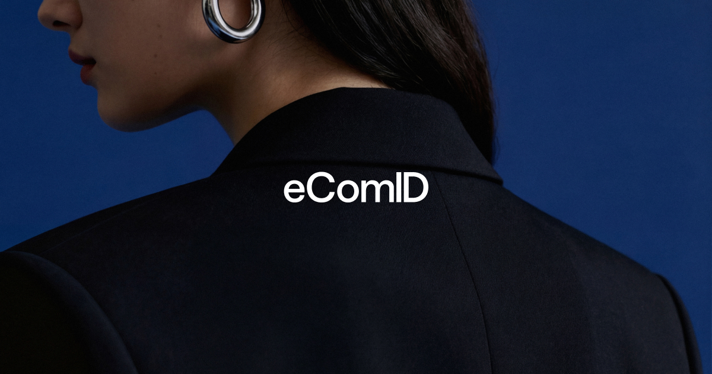
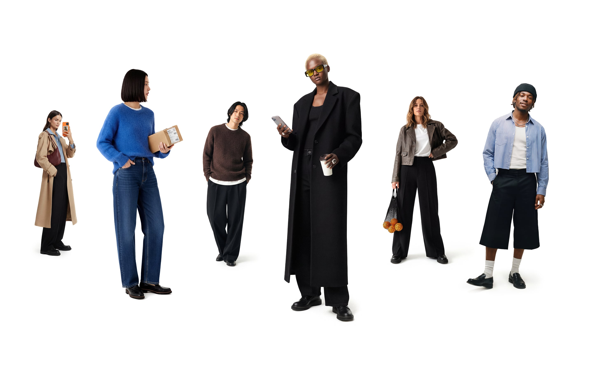
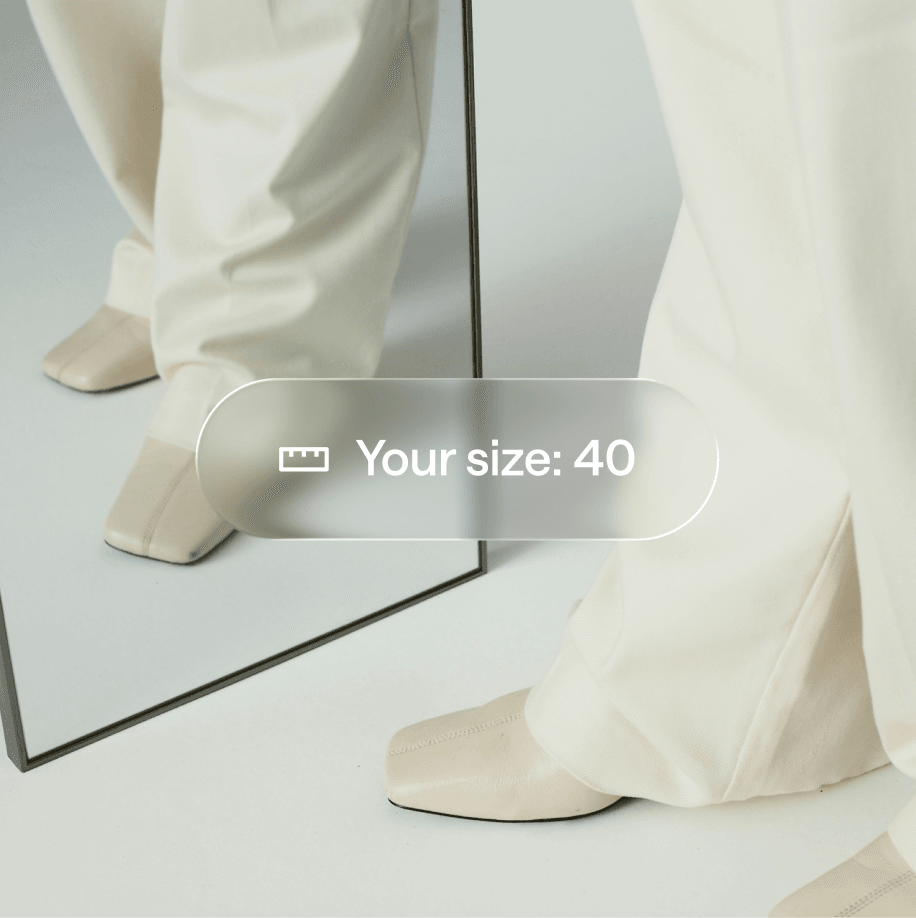

eComID
Reducing returns in e-commerce through sizing insights, competitor analysis, and consumer-focused content.
- Conducted competitor analysis
- Created and distributed consumer survey
- Developed TikTok content strategy
- Analyzed performance and recommendations

Project Overview
During a nine-month collaboration with E-commerce ID, where the project was driven by me and a classmate, we explored how returns in e-commerce can be prevented at the point of purchase.
The company offers a digital sizing solution for e-commerce platforms that helps customers choose the right size directly when shopping, with the goal of preventing returns before they even happen. This tackles a major problem in e-commerce that costs companies large amounts of money every year and also has a negative impact on the environment.
B2B Context
The company operates fully B2B and sells its solution to e-commerce companies such as H&M, Stadium, and Gina Tricot, as well as premium brands like Axel Arigato, House of Dagmar, and Adoore.
Our task was to conduct an in-depth competitor analysis. We reviewed over ten leading companies within size recommendation solutions to understand their strengths, weaknesses, and positioning.
Research & Survey
At the same time, we created and distributed a survey, collecting over 150 responses. The goal was to understand who makes returns, why they happen, what people feel about them, and what kind of information could help them make better decisions when shopping online.
These insights helped us connect the business problem to real consumer behavior and identify where communication could support better decisions before checkout.

TikTok Content Strategy
Based on these insights, we developed a TikTok content strategy and took over the company’s account. We identified an important shift: even though the company is B2B, the audience on TikTok is the end consumer, the people who actually use the solution and are active on the platform.
Each video was created with a clear purpose and based on insights, with a stronger focus on the end customer. We tested different formats, including quick and informative videos, relatable UGC-style content about returns, and videos showing features and benefits of the solution.
Outcome
By analyzing the results, we identified which types of content performed best and provided clear recommendations for future work.
The result was a clearer positioning, better understanding of the target audience, and more effective content, contributing to a 100% increase in TikTok followers.
A B2B product became easier to communicate by focusing on the consumer behavior behind the business problem.
